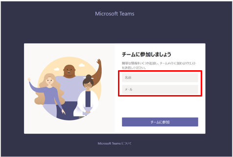
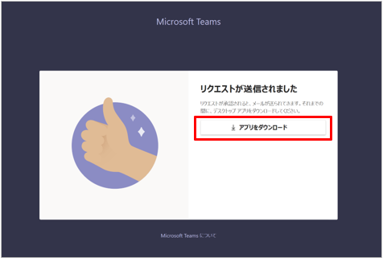
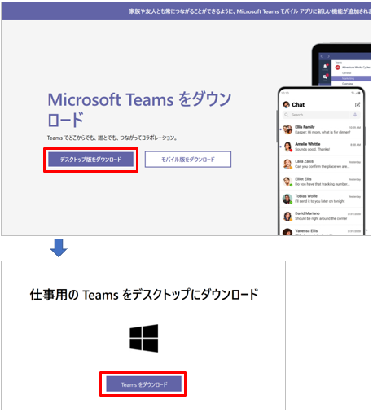
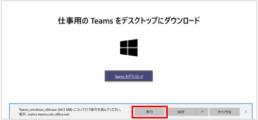
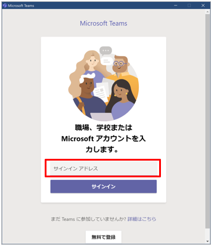
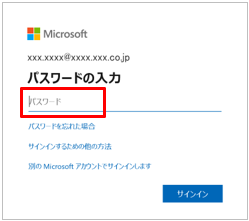
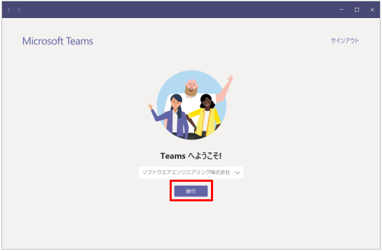

- ホーム
- 2 Teams無料版のセットアップ
- 2.3 ユーザーのセットアップ
2.3ユーザーのセットアップ
ここでは、管理者から招待メールを受け取ってTeamsをインストールするユーザーの操作を説明します。
1.管理者から招待メールが届いたら、メール内のURLをブラウザで開きます。
［チームに参加しましょう］画面が表示されます。
2.名前と会社メールアドレスを入力して、［チームに参加］をクリックします。
|
 |
管理者にリクエストが通知されます。
3.［アプリをダウンロード］をクリックします。
|
 |
既にTeamsをインストール済みのユーザーは、アプリのダウンロードは不要です。Teamsを開くと、チームに参加できます。
4.［デスクトップ版をダウンロード］をクリックします。
|
 |
5.画面の下部に確認メッセージが表示されたら、［実行］をクリックします。
|
 |
インストール中の画面が表示されます。しばらくお待ちください。
続いて、アカウントの入力画面が表示されます。
6.会社のメールアドレスを入力して、［サインイン］をクリックします。
|
 |
7.パスワードを入力して、［サインイン］をクリックします。
|
 |
・参考
警告画面が表示された場合は、招待された組織であることを確認して、［承認］をクリックします。
［Teamsへようこそ！］画面が表示されます。
8.操作を続ける場合は［続行］を、閉じる場合は右上の［×］をクリックします。
|
 |
これでTeamsのセットアップが完了しました。
操作を続ける場合は、『Microsoft Teams無料版 操作手順書 Windows編』を参照してください。